Modifying models using the steering wheel
You can use the 3D steering wheel and 2D steering wheel handles to move or rotate most types of model geometry. The steering wheel is the primary method for modifying synchronous part, sheet metal, and assembly models, and in Solid Edge Subdivision Modeling.
When you use the Select tool to select model geometry (A) that is eligible for moving or rotating, the steering wheel or 2D steering wheel (B) displays, along with the Move command bar (C).
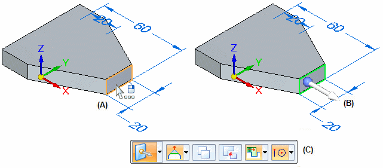
The elements in the select set automatically determine whether the 3D or 2D steering wheel is displayed. All controls for both the 3D steering wheel and the 2D steering wheel initiate the same behavior.
-
3D steering wheel
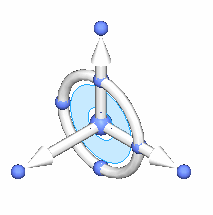
-
2D steering wheel
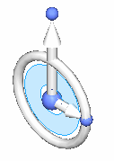
You use the various components of the steering wheel to move and rotate selected elements. You can also use the Connected Faces options on the Move or Rotate command bar to control how the model reacts to the move or rotate operation. The Connected Faces options are best used on thickness faces.
The Advanced Design Intent panel can also be used to control how other faces on the model react to the move or rotate operation. For more information, see Using the Design Intent panel and Steering Wheel Move (Assembly environment).
Progressive exposure
The display of the 3D steering wheel and 2D steering wheel varies based on what you select. This display variation is called progressive exposure. For example, when you select a single planar face in a part document (A), only the primary axis and origin knob of the steering wheel display (B).
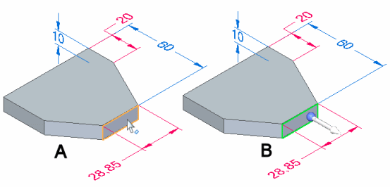
This is done because the most common model modification when a single face is selected is to move the face along the primary axis.
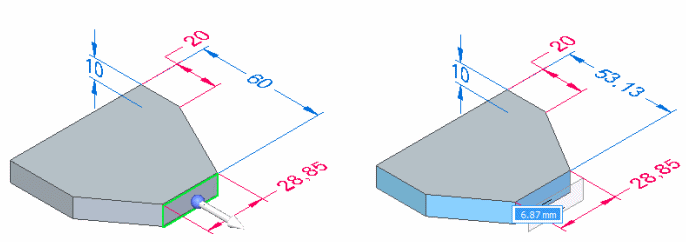
When you click to finish the move operation, all the components on the steering wheel are displayed.
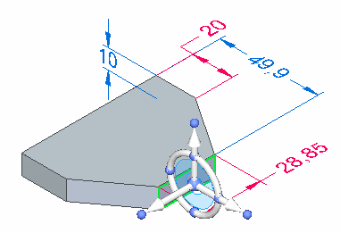
Clicking the origin knob displays all of the steering wheel components and attaches the cursor to the origin so you can move the steering wheel freely.
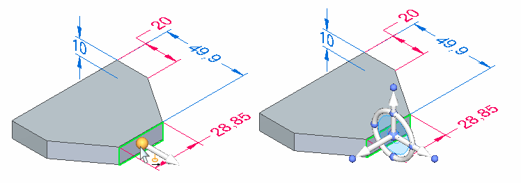
Command bar overview
When moving or rotating faces or features using the 3D steering wheel and the 2D steering wheel, you can use options on the command bar to control how the selected geometry reacts to the modification.
The command bar initially displays with the default Move command:
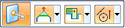
If you click the torus on the 3D steering wheel, the command bar changes to Rotate mode:
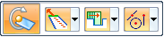
Prompts are displayed for the active mode, move or rotate.
Additional options are available for copying or detaching the selected model geometry, and Keypoint options are available for precisely positioning the geometry relative to keypoints on the model.
The Connected Faces options on the command bar control how adjacent faces on the model react to the modification.
-
Extend/Trim
When the Extend/Trim connected faces option is set, adjacent faces (A) are extended or trimmed as required, but they will maintain their original orientation. Also notice that a selected face can change in size.
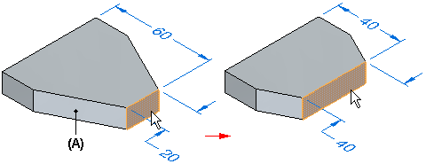
-
Tip
When the Tip connected faces option is set, adjacent faces (A) are extended or trimmed as required, but can also change their angular orientation to the selected face. Also notice that the selected face does not change in size.

-
Lift
When the Lift connected faces option is set, the selected face is moved without changing size or orientation, and new faces are created as required. Existing adjacent faces are also unchanged.

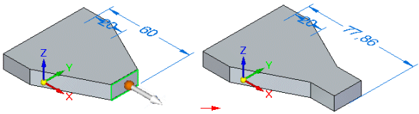
Steering wheel move overview
You can use any axis (A), and the tool plane (B) on the steering wheel to move model geometry.
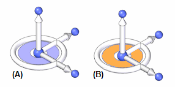
The following examples illustrate and explain common move operations you can perform with the steering wheel.
-
Moving geometry with the primary axis
The primary axis is often used to move planar geometry such as a single planar face or a reference plane. When you select a planar face, the steering wheel is displayed with only its primary axis displayed (A). The primary axis is oriented perpendicular to the selected face. You can click the primary axis arrow (A) to move the selected face (B) along the primary axis. The adjacent faces update their positions automatically, and any unlocked dimensions which are affected by the move operation are also updated.
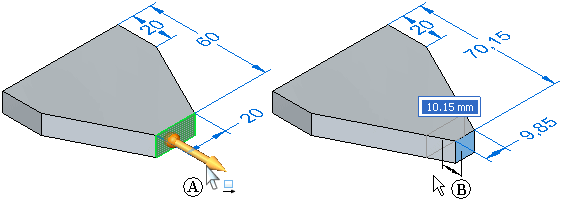
-
Controlling the steering wheel
The steering wheel controls the movement of the selected geometric bodies and faces.
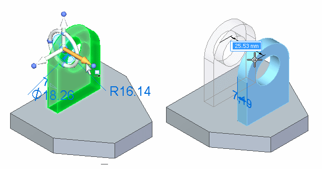
-
Moving geometry with the tool plane
The tool plane on the steering wheel is useful for moving geometry freely about a plane. In this example, the extrude feature, rounds, and hole were selected. The steering wheel was then repositioned onto the planar face shown in the left illustration by dragging the origin, and then orienting the secondary axis such that it points upwards. The tool plane is then coplanar to the planar face.
The tool plane on the steering wheel was then selected and the selected elements were all moved in one operation, as shown in the right illustration.
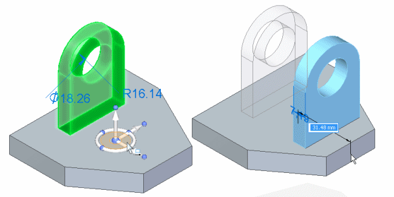
Steering wheel rotate overview
You use the torus (A) on the steering wheel to rotate selected model geometry about the Z axis (B).
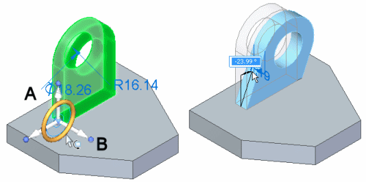
To rotate selections correctly, the steering wheel must be aligned on the axis of rotation you want. This means it is often necessary to move the steering wheel to another location on the model.
You can position the steering wheel with respect to cylindrical faces, cylindrical edges, linear edges, or linear sketch elements to define the rotation axis. For example, when you select the cylindrical face on the hole (A), the 2D steering wheel is displayed by default, and it is positioned where you selected the hole face (B).
The 2D steering wheel is displayed when you select cylindrical features, such as holes. When you click the origin knob on the 2D steering wheel, the 3D steering wheel displays.
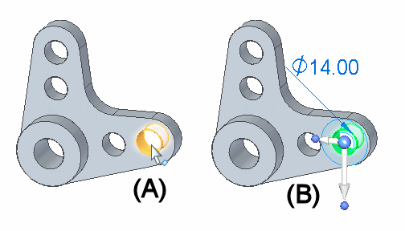
To rotate the hole about the large cylindrical face shown below, you need to position the steering wheel so that it is aligned on the axis of rotation you want. In this example, you reposition the steering wheel by clicking the origin knob on the 2D steering wheel (A), which displays the steering wheel. You can then position the steering wheel over the cylindrical face. The steering wheel will snap to align itself onto the center of the cylindrical face (B).
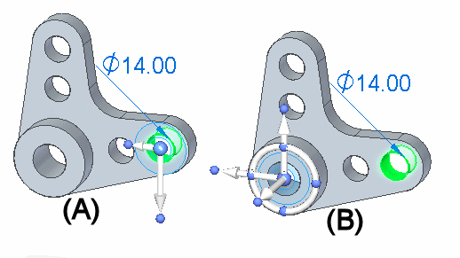
You can then click the torus (A), and rotate the selection the required angular distance (B). You can also use the dynamic input box to type a precise rotation angle.
In this example, the cylindrical face of the hole being rotated was also concentric with the cylindrical face on the model that surrounds the hole. The default settings for the Design Intent panel automatically keeps the faces concentric during the rotate operation.
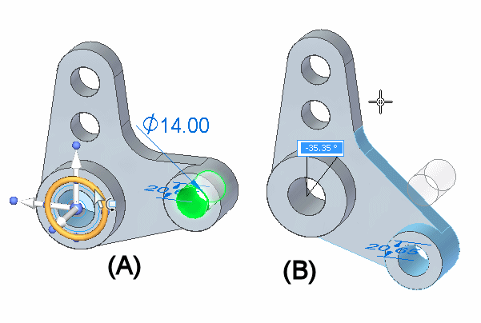
In the following example, no model geometry exists at the required axis of rotation. To rotate the extrude feature, rounds, and hole, a line was first sketched (A) in the proper position for the rotation axis. The steering wheel was then repositioned onto the line by dragging the origin knob (B) of the steering wheel. When you position the steering wheel over a linear element, such as a model edge or sketch element, the secondary axis aligns itself to the linear element (C).
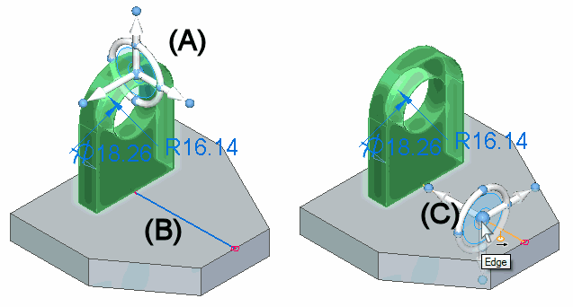
You can then click the torus and move the cursor to rotate the selected elements. You can also use the dynamic input box to type a precise rotation angle.
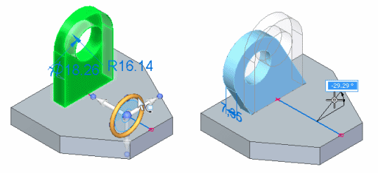
2D steering wheel overview
You use the steering wheel, and the tool plane on the 2D steering wheel to move model geometry in much the same manner as the 3D steering wheel.
You use an axis on the 2D steering wheel to move selected elements along the axis.
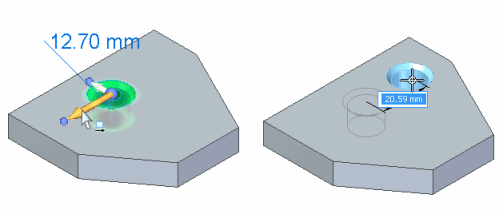
You use the tool plane to move selected elements freely about the tool plane.
The primary difference between the 2D steering wheel and the 3D steering wheel is that you cannot rotate geometry out of its current plane using the 2D steering wheel.
If you want to rotate the geometry out of its current plane, click the origin of the 2D steering wheel to display the 3D steering wheel.
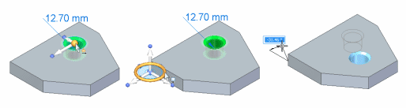